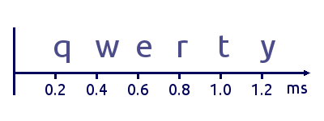
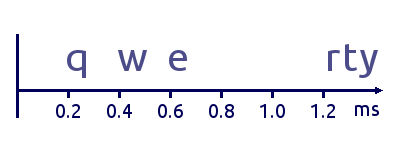
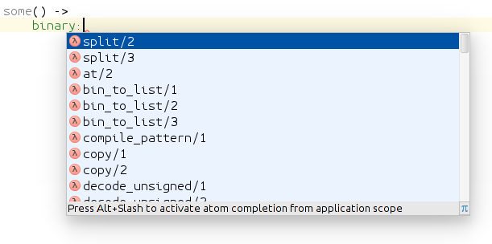

Emacs или Intellij IDEA? Снова древний холивар.
17 ноября 2015
Почему при наличии современных IDE некоторые разработчики до сих пор выбирают текстовые редакторы 30-ти летней давности? И более того, создают новые текстовые редакторы?
Это древний холивар, но я добавлю к нему некоторые нюансы. Взять, например, утверждение "IDE тормозит". Что это значит на самом деле? Почему одни разработчики этого вообще не замечают, а другие просто не могут с этим работать? Разберемся :)
Ритм, ритм, ритм
Я набираю со скоростью 250-300 символов в минуту. Каждое движение пальцев тут же дает обратную связь в виде появления символа на экране. При такой скорости пауза между нажатиями 200 - 240 миллисекунд. То есть, мой emacs каждые 200 миллисекунд перерисовывает экран, и это ему не трудно.

Другое дело -- Intellij IDEA. Она сперва показывает символы ровно. Потом вдруг делает паузу в пол-секунды и больше, потом вдруг показывает несколько новых символов одновременно.

Проблема это или нет? Для кого-то не проблема. Кто-то вообще этого не замечает (если набирает не глядя на экран). А для многих это проблема.
Я пользовался IDEA несколько лет, любил ее, покупал для нее лицензии, оперативную память и новые компьютеры. Обновлялся на новые версии, пользовался EAP-версиями (Eary Access Programm, бета-версии). И мы вместе написали немало кода :) Но увы, чувство ритма у Intellij IDEA плохое, и это главная причина, почему не сложились наши отношения.
Играете ли вы на каком-либо музыкальном инструменте? Даже если не играете, вы можете себе представить, каково играть на фортепиано, у которого западает и не звучит одна клавиша. Это жутко мешает играть. К счастью, есть настройщик, который придет и починит.
Вот и с IDEA я все ждал, когда ее починят. А ее все не чинили и не чинили. В итоге мы расстались. Правда сейчас появилась надежда, что IDEA все-таки починили. Но об этом в конце доклада :)
Тормозит или не тормозит Intellij IDEA?
Раньше я любил участвовать в холиварах про языки программирования, операционные системы и, конечно, про средства разработки. Я заметил тогда, и вижу до сих пор два противоположных и очень устойчивых мнения.
Есть группа людей, которые утверждают, что IDEA тормозит. Они обновляют компьютеры, ставят больше памяти и SSD, крутят настройки в конфиге. И все равно тормозит.
Есть другая группа людей, которые утверждают, что IDEA не тормозит. Они запускают IDEA на старом ноуте с 2 Гб оперативной памяти и с дефолтными настройками, и у них "все летает, ничего не тормозит".
Обе группы утверждают это совершенно искренне. В чем тут дело? Мне кажется, я понял, в чем тут дело.
Есть средняя скорость работы за какой-то промежуток времени. И есть скорость отклика на каждое отдельное событие.
Со средней скоростью у IDEA все хорошо. И даже очень хорошо. За счет умных автокомплитов, хорошей навигации и прочих фич код в IDEA создается быстрее, чем в текстовом редакторе.
А вот отзывчивость на каждое отдельное событие у IDEA плохая. Она то быстро откликается, то начинает тупить, потом опять откликается быстро.
Так вот, люди из первой группы имеют в виду среднюю скорость. А плохую отзывчивость они либо вообще не замечают, либо замечают, но не испытывают из-за этого дискомфорта.
А люди из второй группы имеют в виду отзывчивость, и это причиняет им серьезный дискомфорт.
Впрочем, не редко бывает, что IDE тормозит по-настоящему, во всех смыслах.
Цитата из блога одного iOS разработчика, про XCode:
Было время, когда я отключал подсветку синтаксических ошибок в ХСode в реальном времени, так как я писал код гораздо быстрее, чем XCode успевал его анализировать. Подлагивающие подсказки только раздражали меня. С покупкой нового мака анализ стал почти мгновенным — и я с огромным удовольствием стал использовать эту фичу. Но со Swift я снова встретил ту же проблему.
Проблема решилась покупкой нового мака :) Но, обратите внимание "анализ стал ПОЧТИ мгновенным". То есть, задержка все равно была заметна на глаз.
Ну и с появлением новой крупной фичи (поддержка языка Swift) проблема опять вернулась. Понятно, что когда-то это допилят, ну и автор купит себе еще один новый мак. Но пока этого нет, и приходится терпеть.
Когнитивная нагрузка
При написании кода мы работаем с несколькими контекстами. Основной контекст -- это блок кода, который мы в данный момент пишем. Другие контексты -- это:
- автокомплит;
- другие блоки кода;
- поиск по файлу;
- навигатор;
- сообщения от статического анализатора;
- панель результатов поиска;
- и другие.
Работа в IDE подразумевает активное переключение между всеми этими контекстами. Информация идет в две стороны -- от разработчика к IDE, и от IDE к разработчику.
Возьмем, например, меню автокомплита:

Вот вы бодро набираете буковки, потом жмете хоткей, выскакивает меню, предлагает варианты автокомплита. Вы их читаете, выбираете нужный, принимаете решение. Это переключение контекста. Вот вы делали одно, и информация от вас к IDE, и вот уже вы делаете другое, и информация идет от IDE к вам. А потом нужно опять переключить контекст и продолжить набор кода.
Хорошо, когда вы сами управляете этим процессом, и вызываете автокомплит тогда, когда он вам нужен. Но ведь по умолчанию Intellij IDEA настроена так, что автокомплит выскакивает сам везде, где может. Это, конечно, плохо.
Совсем другое дело, если вы точно знаете, что хотите набрать, и просто ритмично набираете это, никуда не переключаясь. Конечно, иногда вы не помните, и вызываете автокомплит. Тут дело в количестве, которое переходит в качество. Редкие вызовы автокомплитов -- дело хорошее и нужное. Но IDE подталкивает вас к другому: ничего не запоминать, она вам все подскажет.
В процессе написания кода программист действует одновременно на нескольких уровнях.
- моторный -- это механическая работа пальцев и кистей рук;
- взаимодействие с IDE -- мы думаем о том, какие возможности IDE нужны в данный момент и как с ними работать;
- размышления о коде -- мы думаем о задаче, о данных, об алгоритмах, об обработке ошибок и т.д.
Моторный доводится до автоматизма и потом работает без концентрации внимания, на спинном мозге. Второй и третий уровень требуют концентрации внимания. А поскольку ресурс внимания ограничен, они делят его между собой.
При должной тренировке взаимодействие с IDE тоже можно довести до автоматизма. Но это нужно специально тренировать. Иначе вы можете пользоваться IDE хоть 10 лет, и не иметь такого навыка.
В текстовом редакторе все эти уровни тоже есть, но первый и второй уровни проще и сами по себе, и быстрее тренируется их автоматизм. В итоге ресурс внимания можно весь потратить на третий уровень.
Принято считать, что IDE "упрощает" работу программиста. Правильнее сказать "меняет". Что-то становится проще ценой того, что что-то другое становится сложнее. Взаимодействие с IDE: встречный поток информации и переключения контекста создает повышенную когнитивную нагрузку.
Скорость набора кода, так ли это важно?
В среднем, скорость написания кода в IDE выше, чем в текстовом редакторе. А при тренированных навыках и хорошем опыте -- существенно выше. Но так ли она важна, эта скорость? Это зависит от того, как много кода вы пишите.
Думаю, обычный разработчик в день пишет 100-1000 срок кода. Конечно, бывают периоды интенсивной работы. А у некоторых разработчиков это не периоды, а постоянное состояние. И бывают многословные языки программирования, вынуждающие разработчика писать много лишних букв. Но, все-таки, большинство разработчиков пишет несколько сотен строк в день. Это 1-2 строки в минуту.
Для этого большая скорость не нужна. И преимущество IDE в скорости теряет свое значение. А вот когнитивная нагрузка и отзывчивость остаются важными.
Киллер фича IDEA: навигация по коду
Ну теперь пришло время и похвалить Intellij IDEA :) Разработчик читает код чаще, чем пишет. Причем читает не так, как книгу -- по порядку от начала до конца, а небольшими кусками, с частыми перемещениями между разными частями проекта. И тут важна хорошая навигация.
Навигация в текстовых редакторах, конечно, есть. Они худо-бедно понимают структуру проекта и кода. Но Intellij IDEA в навигации уделает кого угодно, это ее киллер фича.
Текстовые редакторы видят проект, как файлы с текстом. У Intellij IDEA принципиально другой уровень -- она выполняет первые фазы компиляции -- синтаксический и семантический анализ, и получает AST (abstract syntax tree) всего проекта. Отсюда точность навигации. (Поэтому она и называется intelligent -- умной).
Это преимущество не так важно в небольшом проекте, где-нибудь на 10-20К срок (что довольно типично для эрланг). Но это становится существенным, если речь идет о большом проекте. И, тем более, о незнакомом проекте. В такой ситуации я и сам запускаю IDEA, и использую ее как навигатор кода, пока не разберусь, что к чему, и не запомню, что где находится. Ну потом-то возвращаюсь в емакс :)
Киллер фича Emacs: эргономика движения рук
У Emacs тоже есть своя киллер фича, но она полезна только тем, кто владеет слепой печатью. Я полагаю, что большинство программистов ей владеют. Большинство, но не все, поэтому нужен небольшой ликбез :)
Есть основное положение рук на клавиатуре, когда пальцы левой руки расположены на клавишах a,s,d,f, а пальцы правой руки на клавишах j,k,l,; При печати пальцы начинают из этого положения, и все время возвращаются в него. При этом запястья и предплечья лежат на столе, и почти не двигаются. Небольшое движение все-таки нужно, чтобы дотянуться до цифр, до функциональных клавиш, и до самых крайних клавиш слева и справа.
Перемещение рук из этого положения к клавишам-стрелочкам и обратно в основное положение -- это существенная задержка. (Про перемещения к мыши и обратно я даже не говорю :)
Emacs позволяет не пользоваться клавишами-стрелочками и функциональными клавишами. Таким образом перемещения запястий минимальны. (Очевидно, то же самое относится и к Vim).
Есть интересные модели клавиатур, которые, наверное, могут вообще убрать движения запястий, и свести всю работу только к движениям пальцев.
В Intellij IDEA это частично работает. Там есть Keymap, копирующий поведение Emacs, насколько это возможно. Увы, работает только в пределах редактора кода. А на других панелях (Project, Structure etc), и в меню приходится пользоваться клавишами-стрелками.
Фишка в том, что емакс так настроен по умолчанию, и сразу приучает пользователя к этой хорошей практике. IDEA так по умолчанию не настроена, пользователи не знают об этом, и даже не пробуют.
Недостатки Emacs
О недостатках IDE я говорил выше. Для полноты картины осталось рассказать о недостатках Emacs :)
Главный недостаток -- плохая дефолтная конфигурация. Она мнемоническая, рассчитанная на легкость запоминания:
- forward/backward (C-f, C-b, M-f, M-b, C-M-f, C-M-b)
- next/previous (C-n, C-p)
- begin/end (C-a, C-e, M-a, M-e, C-M-a, C-M-e)
Увы, проблема в том, что легкость запоминания противоречит легкости использования. C-f, C-b, C-n, C-p -- не самые удобные шорткаты для базовых перемещений по тексту. Vim в этом плане настроен лучше.
Казалось бы, тут нет особой проблемы. Нужно просто поменять неудобные шорткаты на удобные и все. Например, сделать как в Vim: h,j,k,l через Meta. Но тут оказывается, что все удобные шорткаты уже заняты чем-то нужным, и это нужное тоже приходится менять. В итоге нужно существенно переделывать всю схему.
Emacs вынуждает каждого своего пользователя заниматься конфигурацией. Так что это становится не "возможностью", а "необходимостью". При этом пользователи обычно не являются специалистами по юзабилити и действуют интуитивно. В итоге у каждого свой собственный Emacs, не такой, как у всех остальных, и не факт, что лучше, чем он был по умолчанию.
И даже если кто-то сделает хорошую конфигурацию (ErgoEmacs, например), другие пользователи об этом не знают. Так что хорошая конфигурация по умолчанию очень важна.
Второй недостаток -- обилие информации по Emacs. Да, это недостаток, и даже проблема. Существует толстый мануал от Столлмана. Существует встроенный хелп. Есть вики, блоги, сайты, есть даже книги про Emacs на amazon.com. И все это нужно читать и изучать, потому что конфигурация, см выше -- не "возможность", а "необходимость".
Между тем, разработчику нужно относительно небольшое подмножество возможностей Emacs. И это подмножество могло бы быть системно и кратко изложено. И порог входа мог бы быть гораздо ниже.
Известно, что сложность бывает случайная и необходимая. Сложность Emacs во многом случайная.
Идеальная IDE
Несмотря на многолетнюю историю текстовых редакторов и IDE, и множество существующих вариантов, все равно у каждого из них есть свои проблемы. Ниша идеального инструмента для программиста остается открытой. Поэтому и пишутся все новые и новые редакторы. Вот свежие: Sublime Text, Atom. Наверняка прямо сейчас пишутся еще несколько десятков таких.
Давайте подумаем, каким должен быть идеальный текстовый редактор или IDE? Можно оттолкнуться от перечисленных здесь недостатков.
Проблема ритма (отзывчивость)
Умная женщина умеет притвориться глупой. IDE тоже должна уметь.
Проблема отзывчивости решается довольно просто. Нужно включать мозги не после каждого события onKeyUp, а после значимой паузы в серии таких событий. То есть, пока разработчик бодро жмет клавиши, IDE отключает мозги и не мешает ему. Как только разработчик прервался на 1 секунду, IDE включает мозги и начинается разбираться, чего там нового напечатано.
И будет просто замечательная отзывчивость на любом, самом слабом компьютере.
Проблема когнитивной нагрузки
Тоже решается легко. Нужно генерировать встречный поток информации только по требованию разработчика. Не подсовывать автокомплиты сразу, а ждать, пока разработчик попросит. Не показывать все имеющися панели по умолчанию, а ждать, пока разработчик попросит что-то показать.
Можно сделать разные профили настроек. Среди них минималистичный профиль, где все лишнее отключено. Конечно, разработчик и сам может сделать себе такой профиль. Но важно, чтобы это было из коробки.
Когда пользователь первый раз запускает Emasc и видит стартовый буфер, он понимает, что надо начинать с документации. Это хорошо. Когда пользователь первый раз запускает IDE и видит кучу панелек и кнопочек, он понимает, что надо начинать с активного тыканья во все подряд. Это плохо :)
Навигация по графу вызовов функций
Ну и можно добавить некоторое новшество. Хотя эта идея не нова, распространения почему-то не получила, хотя вполне заслуживает.
Я предлагаю навигацию по графу вызовов функций, а не по классам-модулям. Такие графы я видел как отдельные тулы, но не в составе существующих IDE, и уж точно не как основной способ навигации.
IDE показывает часть этого графа, где в центре единица редактирования -- отдельная функция. Узлы слева -- другие функции, из которых вызывается текущая. Узлы справа -- другие функции, которые вызываются из текущей. Навигация состоит в перемещении по этим узлам. После каждого перемещения другая функция становится текущей, и другая часть графа становится видимой.
Такая навигация на самом деле есть. Это набор из фич: Find usages, Go to declaration, Forward, Backward. Таким образом по графу перемещаться можно, но только он не визуализирован. А вот если добавить визуализацию, получится то, что нужно.
UI у меня более-менее продуман, но останавливаться на нем не буду, так как это оффтопик. Если интересно, можно обсудить как-нибудь отдельно.
Такая навигация больше подходит к функциональным языкам, где контекста одной функции обычно достаточно. И не очень подходит к ООП языкам, где много контекста за пределами функции.
IDEA strikes back
На этом я планировал закончить, но совсем недавно узнал про новую фичу в Intellij IDEA: zero-latency typing.
JetBrains внезапно услышали пользователей Emacs/Vim/Sublime, и решили разобраться, почему у них такая плохая отзывчивость. Оказалось, что это не потому, что IDEA умная и много думает, а потому, что она не оптимально работает с X Windows System.
То есть, проблема касается только линукса. А я всегда пользовался IDEA под линуксом, поэтому никогда и не видел ее работающей быстро :)
JetBrains там что-то пофиксили, сперва выпустили EAP с экспериментальной фичей, а недавно и стабильную версию, где эта фича включена из коробки.
Так что я неделю назад скачал свежую Intellij IDEA, и начал пробовать ее заново. И, действительно, отзывчивость стала гораздо лучше. И поддержка Erlang тоже хорошая. Мне еще предстоят долгие и кропотливые усилия по настройке keymap, чтобы в редакторе все шорткаты работали идентично, как в Emacs. После этого IDEA станет пригодной к использованию. Ну а там посмотрим, как оно пойдет.
comments powered by Disqus